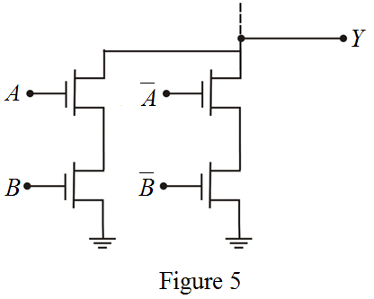

Case-1:
Draw the pull up network for the logic function , which comprises PMOS transistors only.
, which comprises PMOS transistors only.
Consider the following logic function:
The CMOS logic gate is combination of pull up network (PUN) and pull down network (PDN). The PUN comprises PMOS transistors, and the PDN comprises NMOS transistors.
The PMOS transistor conducts when the input signal at its gate is low, and the NMOS transistor conducts when the input signal at its gate is high.
In the CMOS gate circuit, the PDN and the PUN are dual networks where series branch exist in one, a parallel branch exists in other.
Case-1:
Draw the pull up network for the logic function, which comprises PMOS transistors only.
Draw the pull down network for the logic function, which comprises NMOS transistors only.

Sketch the CMOS realization for exclusive OR function.

The logic function can be expressed as follows.

Draw the pull up network for the logic function , which comprises PMOS transistors only.
, which comprises PMOS transistors only.

Draw the pull down network for the logic function, which comprises NMOS transistors only.

Sketch the CMOS realization for exclusive OR function.
Thus, the different CMOS realizations for the exclusive-OR function are sketched as shown in Figure 3 and Figure 6.